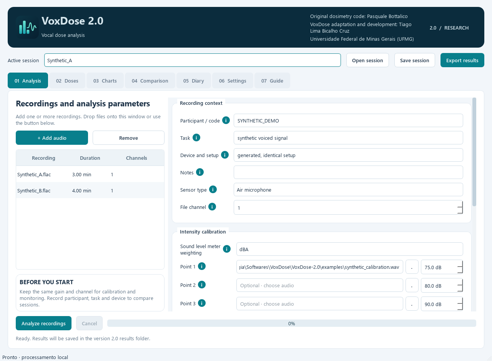
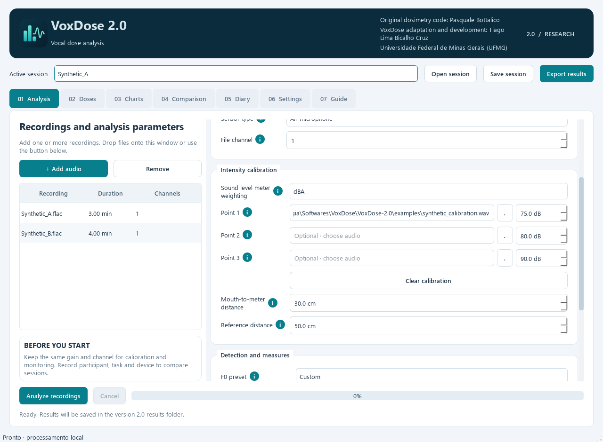
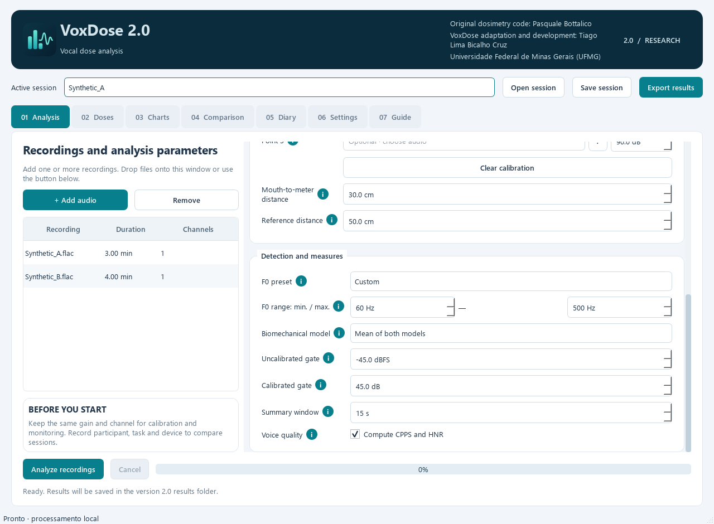
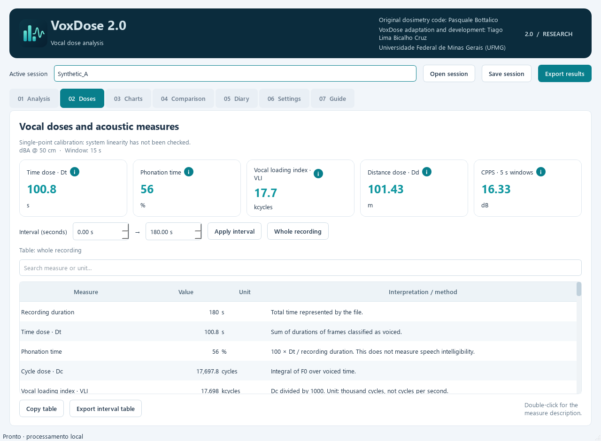
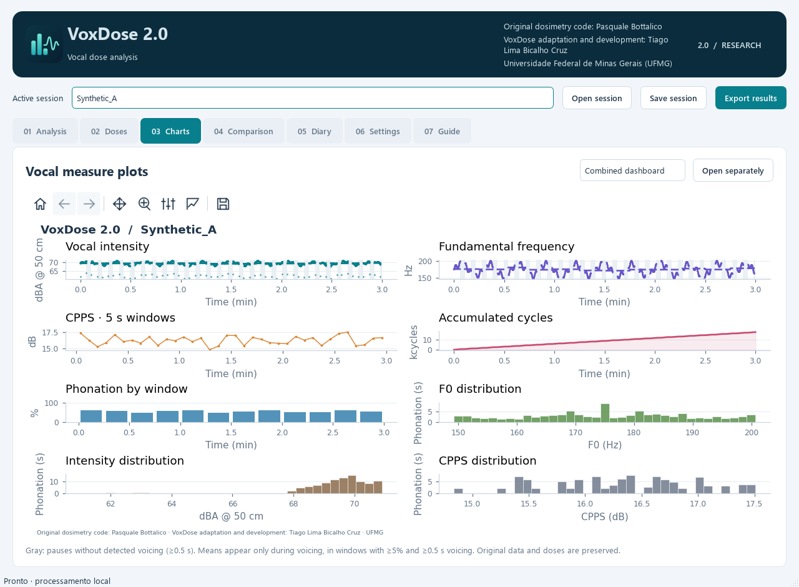
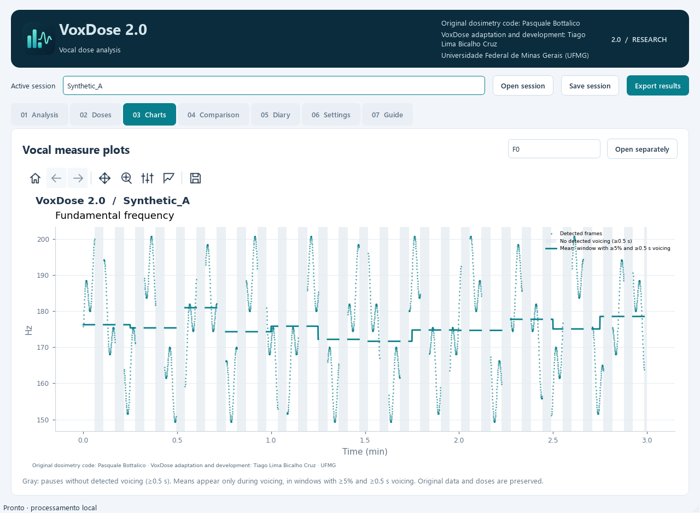
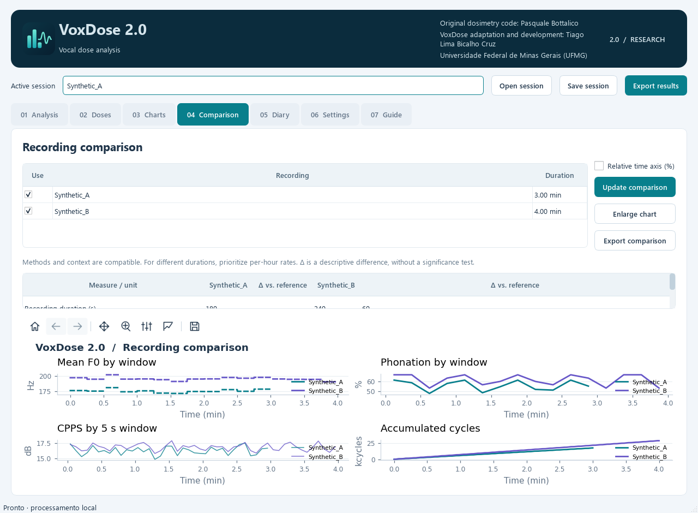
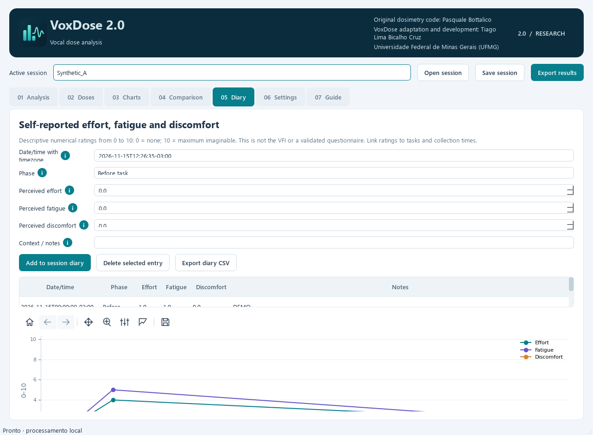
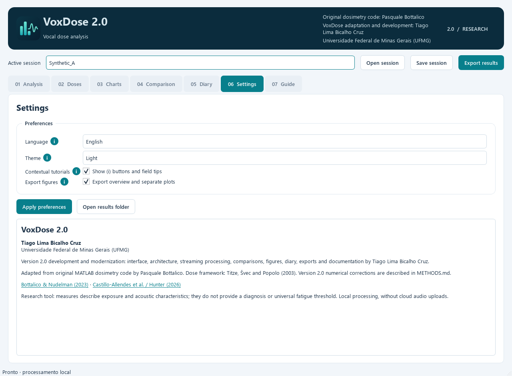

User manual
Vocal exposure, session comparison and perceptual records.
Tiago Lima Bicalho Cruz - Universidade Federal de Minas Gerais (UFMG)
Adapted from original code by Pasquale Bottalico. Version 2.0 development and modernization by Tiago Lima Bicalho Cruz.
Screens in this manual use artificial signals and ratings identified as Synthetic/DEMO. They are not clinical data or normative values.
01 / Start and analyze
On Windows, use the NSIS installer and open VoxDose from the Start menu, or run the portable VoxDose-2.0.exe. Python is included. New configurations start in English; Brazilian Portuguese is available in Settings > Language. Add or drop WAV/FLAC, identify participant, task and device, and set channel, calibration and F0 before analysis.
The source package includes artificial sessions examples/Synthetic_A.voxdose and Synthetic_B.voxdose. Open them with Open session to explore without recalculating audio. Switch the active session in the top bar.

The queue accepts multiple files. Each completed analysis saves results to its own folder.
02 / Calibrate intensity
Use a steady emission with simultaneous sound level meter reading. Calibration and monitoring need the same channel, gain and setup. Avoid silence, automatic gain control and clipping. Choose A for dBA or Z for dBZ; do not substitute dBC for Z.

Air microphone: 1-3 points. Distance = mouth-to-meter. Uncalibrated: dBFS; Dd/De/Dr unavailable.
03 / Adjust detection
Speech: start at 60-500 Hz; singing: 50-1200 Hz. Adapt to the actual voice. The range does not define gender. The biomechanical model only affects Dd and De; the mean combines the historical branches. A frame requires detected F0 and a level above the gate.

Hover over (i) to read an explanation, with no click or dialog to dismiss. The detector does not automatically separate other speakers or movement artifacts.
04 / Read the dose table
The table separates value, unit and method. Search measures, sort columns and double-click for a description. The interval computes only the selected segment, weighting partial frames. CPPS/HNR retain their original 5 s windows.

A dash means an unavailable measure. Messages above the table provide calibration and quality context.
05 / Measure guide (1/3)
Doses and acoustic features describe exposure and behavior. There is no automatic cutoff for fatigue, injury or need for rest.
| Measure | Unit | How to interpret |
|---|
| Recording duration | s | Total time represented by the file. |
| Time dose · Dt | s | Sum of durations of frames classified as voiced. |
| Phonation time | % | 100 × Dt / recording duration. This does not measure speech intelligibility. |
| Cycle dose · Dc | cycles | Integral of F0 over voiced time. |
| Vocal loading index · VLI | kcycles | Dc divided by 1000. Unit: thousand cycles, not cycles per second. |
| Distance dose · Dd | m | Model estimate of accumulated vibratory distance. Requires calibrated Z-weighted SPL. |
| Dissipation per volume · De | J/m³ | Estimated dissipated energy per unit tissue volume; not total energy in joules. |
| Radiated energy · Dr | J | Spherical radiation model using Z-weighted SPL and distance in metres. |
| Mean F0 | Hz | Duration-weighted mean over voiced frames only. |
| F0 standard deviation | Hz | F0 spread over voiced frames. Artificial silence zeros are excluded. |
| F0 · 10th percentile | Hz | Percentile weighted by phonation time. |
| F0 · median | Hz | Median weighted by phonation time. |
| F0 · 90th percentile | Hz | Percentile weighted by phonation time. |
| F0 P90-P10 range | st | 12 × log2(P90/P10). Robust range in semitones. |
| Mean voiced SPL Z | dB SPL | Arithmetic mean of unweighted levels at the specified distance. Different from Leq. |
| SPL Z standard deviation | dB | SPL Z spread over voiced frames. |
05 / Measure guide (2/3)
Doses and acoustic features describe exposure and behavior. There is no automatic cutoff for fatigue, injury or need for rest.
| Measure | Unit | How to interpret |
|---|
| Voiced Leq Z | dB SPL | Energy mean: 10 log10 of the weighted mean of 10^(L/10), during phonation only. |
| Mean voiced SPL A | dBA | Mean levels after digital A filtering. Calibration does not certify the system as a sound level meter. |
| Voiced Leq A | dBA | A-weighted energy mean during phonation; not whole-session environmental LAeq. |
| Mean displayed level | dB | dBFS when uncalibrated; SPL A if available, otherwise SPL Z. Check plot units. |
| CPPS · 5 s windows | dB | Smoothed cepstral peak prominence via Praat. Original 5 s windows without pause removal; minimum 20% voicing. Protocol and sensor dependent. |
| HNR · exploratory | dB | Autocorrelation harmonics-to-noise ratio. Affected by noise, task and sensor; not specific to effort. |
| Time without detected voicing | s | Includes silence, unvoiced sounds, noise and detector misses. Does not establish physiological rest. |
| Nonvoicing intervals ≥0.25 s | n | Count of contiguous segments lasting at least 250 ms without detected voicing. |
| Nonvoicing intervals ≥5 s | n | Long detector intervals. Do not interpret as measured tissue recovery. |
| Longest nonvoicing interval | s | Longest contiguous duration without detected voicing. |
| Voiced bout · median | s | Median duration of contiguous voiced segments, without bridging pauses. |
| Longest voiced bout | s | Longest contiguous run of voiced frames. |
| Samples near clipping | % | Percentage of digital samples with magnitude ≥0.999 full scale. |
| Cycle dose · Dc / recording hour | cycles/h | Total normalized per recording hour, for comparing different durations. |
05 / Measure guide (3/3)
Doses and acoustic features describe exposure and behavior. There is no automatic cutoff for fatigue, injury or need for rest.
| Measure | Unit | How to interpret |
|---|
| Cycle dose · Dc / voiced second | cycles/s | Total divided by Dt. Interpret alongside the total: this describes exposure intensity, not its duration. |
| Distance dose · Dd / recording hour | m/h | Total normalized per recording hour, for comparing different durations. |
| Distance dose · Dd / voiced second | m/s | Total divided by Dt. Interpret alongside the total: this describes exposure intensity, not its duration. |
| Dissipation per volume · De / recording hour | J/m³/h | Total normalized per recording hour, for comparing different durations. |
| Dissipation per volume · De / voiced second | J/m³/s | Total divided by Dt. Interpret alongside the total: this describes exposure intensity, not its duration. |
| Radiated energy · Dr / recording hour | J/h | Total normalized per recording hour, for comparing different durations. |
| Radiated energy · Dr / voiced second | J/s | Total divided by Dt. Interpret alongside the total: this describes exposure intensity, not its duration. |
06 / Combined charts
The dashboard combines intensity, F0, CPPS, accumulated cycles, windowed phonation and distributions. Time is minutes from the start. Mean intensity is arithmetic; the energy-based Leq is in the table.

Gray: pauses ≥0.5 s. Means appear only during voicing and in windows with ≥5% and ≥0.5 s voicing. Display changes preserve data and doses.
07 / Individual and enlarged charts
Choose one of 13 types in the selector and Open separately. HNR, RMS envelope and accumulated Dd/De/Dr are available in addition to dashboard plots. RMS is a frame envelope, not the raw waveform. Use the toolbar to zoom, pan and save.

Export results generates PNG and SVG. Separate figure export is controlled in Settings.
08 / Compare long recordings
Select at least two sessions. The first is the reference. Update comparison; enlarge the chart for more space. Use absolute time for elapsed time or relative time to align 0-100% of duration.

For different durations, prioritize per-hour rates. Totals and cumulative curves depend on recording duration.
09 / Interpret differences in context
Example: 100,000 cycles over 1 h and 200,000 over 2 h both equal 100,000 cycles per hour. The second total is higher, but the rate is equal. Consult both measures.
Deltas require matching, nonempty participant, task and device fields, plus compatible parameters and method. A message explains mismatches. Individual values remain visible. This does not guarantee equivalent experimental conditions.
Delta is an absolute difference, without a significance test. For phonation percentage, delta is in percentage points. Relative time does not synchronize actual events, and detector pauses do not establish tissue recovery.
Version 2.0 corrects earlier calculations and units. Reanalyze original audio for version comparisons; do not automatically pool old and new spreadsheets.
| Check | Why |
|---|
| Participant and task | Avoid attributing context differences to voice changes. |
| Gain, placement and coupling | Changes can alter intensity and spectral measures. |
| F0 bounds, gate and calibration | They affect voicing selection and physical estimates. |
| Total and normalized rates | They distinguish exposure duration from exposure intensity. |
10 / Record perceived effort and fatigue
The diary records effort, fatigue and discomfort from 0 to 10, with date/time and timezone. Zero = none; ten = maximum imaginable. Label before, after or follow-up. Ratings are not calculated from audio and are not the VFI, Borg or a validated questionnaire.

Adding/deleting updates the local session. Export CSV to follow ratings. Shown data are artificial.
11 / Language, appearance and help
New configurations start in English. In Settings, choose Brazilian Portuguese or English, light/dark theme and tutorials, then apply preferences. Hover over (i) for an immediate explanation: no click or OK button is required. Keyboard focus also shows help. Disabling tutorials removes (i) and field tips while retaining the guide and table descriptions. Sessions and parameters are preserved.

Credits: adapted from Pasquale Bottalico code; version 2.0 development by Tiago Lima Bicalho Cruz, UFMG.
12 / Save, export and reproduce
After analysis, the program creates a results folder with session, tables and metadata. Installed Windows data is stored in %LOCALAPPDATA%/VoxDose; portable data goes alongside the EXE. Open the folder from Settings. Uninstallation preserves data. Export results creates another set with figures and a unique identifier; Save session lets you choose another file.
Sessions do not contain raw audio, but include features and entered metadata. They are not encrypted. Keep original audio and calibration recordings to recalculate results. The stored hash is for the selected channel PCM.
| File | Contents |
|---|
| session.voxdose | Reopenable ZIP/JSON/CSV session, without executing code. |
| VoxDose_results.xlsx | Summary, windows, CPPS/HNR, metadata and quality. |
| VoxDose_results.png | Full PNG table of doses and other measures, with units and credits. |
| frames.csv.gz | All frames, with time and actual duration. |
| acoustic_5s.csv / windows.csv | Acoustic observations and temporal summaries. |
| metadata.json | Parameters, calibration, versions, authorship and provenance. |
| figures/*.png / *.svg | Overview and optional individual figures. |
| diary.csv | Perceptual ratings when present in the export. |
13 / Contact sensors: experimental mode
Contact microphones and accelerometers capture vibration, not airborne pressure directly. Identify the device and document location, attachment, contact pressure, gain and posture. VoxDose does not verify coupling stability or automatically remove movement.
Without a dedicated calibration: digital levels, time/cycles and exploratory periodicity measures. For estimated SPL, select at least three simultaneous soft-to-loud reference levels spanning at least 10 dB in both digital and reference levels. Unchanged setup is essential.
The fit produces slope, intercept, RMSE and R². These describe the fitted points, not independent validation. An A reference only produces an A estimate; Dd/De/Dr require a Z reference. Even with Z, contact-derived doses remain experimental. Direct contact deltas are withheld.
The study by Castillo-Allendes and colleagues, including Eric Hunter (2026), reports promising F0/CPPS results in a simulated setting with two trained adults. It does not validate VoxDose, general clinical use or a fatigue index. See the report for the full research discussion.
| Observation | Action |
|---|
| Setup/gain changed | Recalibrate and document the change. |
| Calibration failed | Correct inputs; the app does not apply an arbitrary SPL constant. |
| CPPS/HNR across sensors | Do not assume equivalence; preserve task, protocol and sensor. |
14 / Troubleshooting and sources
No voicing: check channel, F0 bounds, noise and gate. Missing doses: check calibration and SPL Z availability. Clipping: re-record at lower gain. Audio cannot open: convert a copy to WAV/FLAC, preserving the original. Cancellation occurs between blocks or figures; wait for it to finish before closing.
Ctrl+O: add audio. Ctrl+S: save session. F1: guide. Revision 2.0.2 includes a portable EXE and NSIS installer with manuals, without requiring Python or an _internal folder. The logs folder records errors. The macOS builder must run on a Mac; no Mac binary was generated on this Windows host. See RELEASE_2.0.2.md.
Titze, Švec & Popolo (2003) - dose framework.
Bottalico & Nudelman (2023) - DIY dosimeter.
Hunter et al. (2020) - demand, response, effort and fatigue.
Castillo-Allendes et al. / Hunter (2026) - contact sensors, proof of concept.
Praat: Get CPPS - definition and parameters.
See METHODS.md for equations and legacy differences; Relatorio_VoxDose_2.0.pdf for decisions and checks. Version 2.0 development: Tiago Lima Bicalho Cruz, UFMG. Adapted from original code by Pasquale Bottalico. This version provides no diagnosis, injury prediction or universal fatigue limit.